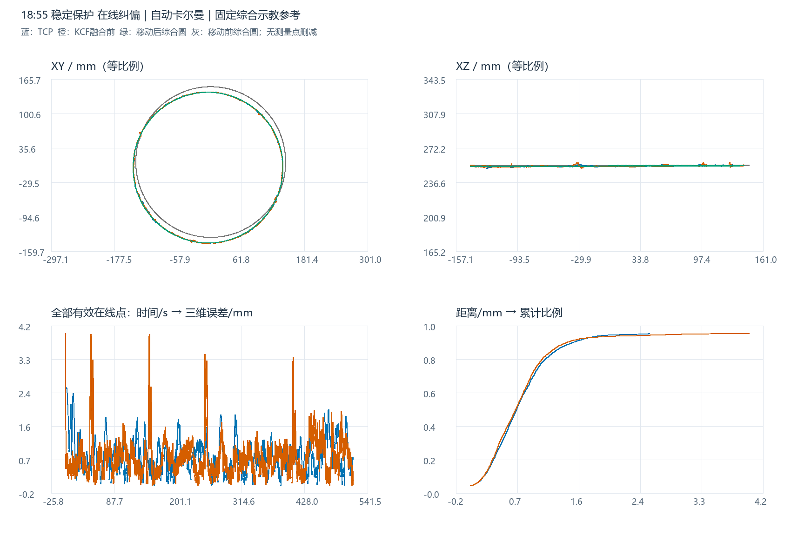
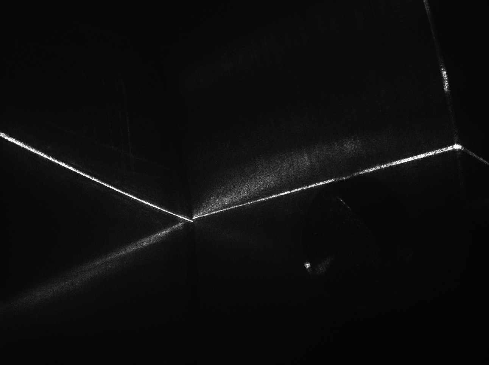
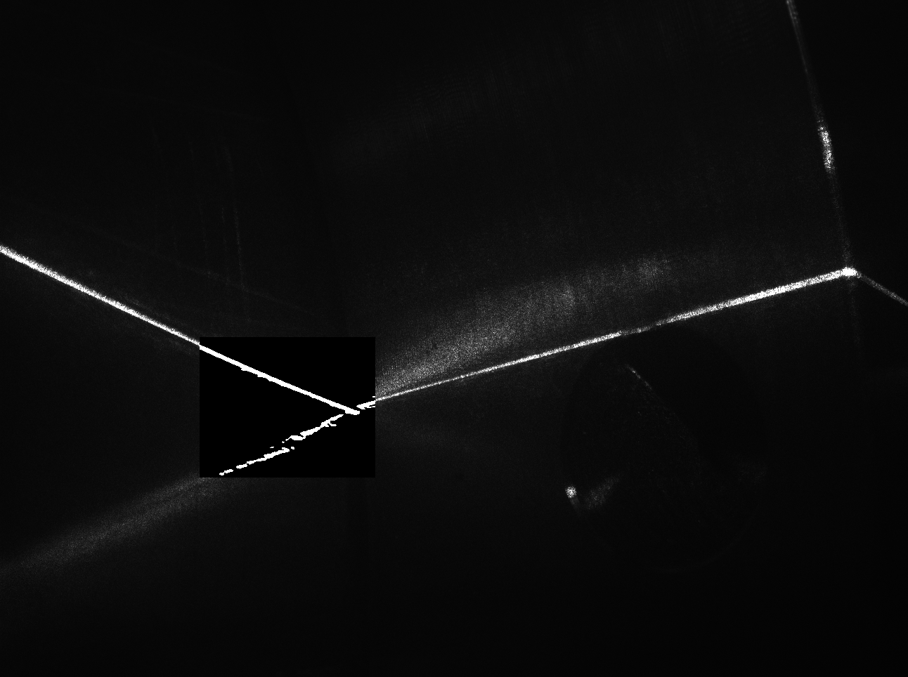

18:55 稳定保护在线纠偏结果分析
移动后综合示教参考下的空间误差与局部更新证据
参考固定不变：此前四组历史示教等权综合的原始圆，半径 142.035339635 mm。本轮只按融合前KCF拟合圆心与法线，刚体移动综合示教，保持半径/尺度，不用TCP或融合后视觉寻优。本组与另一组各自估计当前位置；两组的移动后参考均非独立实测焊缝真值。
1. 数据范围与坐标
读取用户指定会话，原始机器人状态6,718条，视觉诊断7,445条。TCP按online_running、CORFLAG=1、DETFLAG=1、S_START=1、S_HOLD=0、ALARM=0筛选，保留5,856点；视觉按online_running、result_valid=1筛选，融合前后各7,138点。未平滑、未拟合替换或删除峰值，原始记录只读。两组均正常结束，未将启动/停止等待段混入主统计。
全部轨迹统一到变位机末节随动坐标系（材料系）：TCP经RBCALIB转固定站系，再逐点消除Ry(S1)Rz(S2)；视觉像素用同帧机器人姿态和当前相机标定投影，并加回工具TCP原点到末节的Z=231 mm偏置。若切到工具TCP系，所有圆心Z减231 mm，半径与误差不变。投影复算与日志一致不等于历史标定绝对准确。
2. 四轨迹三维图与XYZ波动
蓝：TCP；橙：融合前KCF；灰色虚线：移动前综合示教；绿：移动后综合示教；紫色融合后视觉可从图例打开。支持三维/XY/XZ/YZ、两组示教独立切换、Z显示倍率，默认1×等比例。倍率不改变坐标或误差；生成W点是既有综合参考采样，不是本次新增实测点。
ΔX、ΔY、ΔZ随时间变化
每个点减去参考圆最近点，可查看局部轴向波动；它不是TCP与视觉的同步配对差，也不评价沿缝时序滞后。

3. 综合示教来源、移动与圆参数
| 历史示教 | W点数 | 拟合半径/mm | 综合权重 |
|---|---|---|---|
| 20230608CHUFENGKOU | 1687 | 140.6477 | 25% |
| 20250606CHUFENGKOU | 1663 | 141.6920 | 25% |
| 20260308CHUFENGKOU | 1355 | 142.0846 | 25% |
| 20260404CHUFENGKOU1 | 1368 | 143.7170 | 25% |
沿用此前的历史W几何去重、分组周向代表点拟合和等权综合结果，不因本轮结果改变来源或半径。移动只对齐圆心与法线，不缩放；绕法线相位对圆几何不可辨识，采用最小旋转。TCP、KCF和融合后视觉的拟合圆只用于描述，测量轨迹仍为原始点。
| 圆 | 圆心X/mm | 圆心Y/mm | 圆心Z/mm | 半径/mm | 单位法线 |
|---|---|---|---|---|---|
| 固定综合原始示教（移动前） | 4.4924 | 8.9094 | 253.9076 | 142.0353 | -0.000832582, 0.001575923, 0.999998412 |
| 移动后综合示教参考 | -0.5830 | -1.6891 | 253.4505 | 142.0353 | -0.003314379, 0.000159335, 0.999994495 |
| TCP 实际轨迹拟合圆 | -0.5899 | -1.6953 | 253.4809 | 141.9574 | -0.003361344, 0.000286585, 0.999994310 |
| KCF 原始检测拟合圆 | -0.5830 | -1.6891 | 253.4505 | 141.9706 | -0.003314379, 0.000159335, 0.999994495 |
| 卡尔曼融合后视觉拟合圆 | -0.6111 | -1.7112 | 253.4492 | 141.9209 | -0.003280084, 0.000139458, 0.999994611 |
4. 主误差结果
| 轨迹 | 点数 | 平均/mm | 最大/mm | RMSE/mm | P95/mm | ≤2 mm | ≤3 mm | >3 mm点数 |
|---|---|---|---|---|---|---|---|---|
| TCP 实际轨迹 | 5856 | 0.7376 | 2.5700 | 0.8472 | 1.5370 | 98.92% | 100.00% | 0 |
| KCF 原始检测 | 7138 | 0.7250 | 3.9869 | 0.8578 | 1.4529 | 98.08% | 99.43% | 41 |
| 卡尔曼融合后视觉 | 7138 | 0.7186 | 3.9869 | 0.8485 | 1.4508 | 98.21% | 99.48% | 37 |
c = 移动后综合圆心；n = 圆平面单位法线；R = 固定142.035339635 mm h = (p-c)·n；ρ = ||(p-c)-h n|| e = √((ρ-R)²+h²) 平均 = mean(e)；最大 = max(e)；RMSE = √mean(e²)
与此前报告同口径，采用点到连续三维综合圆周的解析最短距离，不混用原单组示教折线、最近采样点或行号配对距离。按记录样本加权，不按弧长/时间重加权。3 mm只用于描述偏离，不擅自设为逐点工艺合格线。
5. 误差分量、时间窗口与峰值
| 轨迹 | 径向有符号均值/mm | 径向RMSE/mm | 离面有符号均值/mm | 离面RMSE/mm | ΔX RMSE/mm | ΔY RMSE/mm | ΔZ RMSE/mm |
|---|---|---|---|---|---|---|---|
| TCP 实际轨迹 | -0.0885 | 0.7086 | 0.0316 | 0.4645 | 0.5454 | 0.4521 | 0.4647 |
| KCF 原始检测 | -0.1074 | 0.7092 | 0.0140 | 0.4826 | 0.5325 | 0.4682 | 0.4828 |
| 卡尔曼融合后视觉 | -0.1609 | 0.7070 | 0.0127 | 0.4693 | 0.5395 | 0.4567 | 0.4694 |
有符号均值可能正负抵消，整体仍使用非负三维距离和RMSE。参考位置由KCF估计，可吸收整体位姿偏差，分量不能直接当独立标定误差。
| 轨迹 | 时段 | 点数 | 平均/mm | RMSE/mm | 最大/mm | >3 mm点数 |
|---|---|---|---|---|---|---|
| TCP 实际轨迹 | 前60秒 | 674 | 0.9663 | 1.1312 | 2.5700 | 0 |
| TCP 实际轨迹 | 60秒以后 | 5182 | 0.7078 | 0.8030 | 1.9895 | 0 |
| KCF 原始检测 | 前60秒 | 803 | 0.7250 | 0.9758 | 3.9869 | 23 |
| KCF 原始检测 | 60秒以后 | 6335 | 0.7250 | 0.8417 | 3.9552 | 18 |
| 卡尔曼融合后视觉 | 前60秒 | 803 | 0.7178 | 0.9486 | 3.9869 | 19 |
| 卡尔曼融合后视觉 | 60秒以后 | 6335 | 0.7187 | 0.8350 | 3.8990 | 18 |
前60秒从保留轨迹的最早时间起算，不是会话启动时刻。TCP最大值在18:56:32.760；融合前KCF最大在18:56:32.363；融合后视觉最大在18:56:32.363。事件按相邻记录均超3 mm归组，相邻时间间隔大于200 ms拆分，下表最多15段，完整列表保留。
| 轨迹 | 开始 | 结束 | 点数 | 最大/mm | 峰值径向/mm | 峰值离面/mm |
|---|---|---|---|---|---|---|
| KCF 原始检测 | 18:56:32.363 | 18:56:32.363 | 1 | 3.9869 | -2.0380 | 3.4266 |
| 卡尔曼融合后视觉 | 18:56:32.363 | 18:56:32.429 | 2 | 3.9869 | -2.0380 | 3.4266 |
| KCF 原始检测 | 18:57:17.341 | 18:57:18.763 | 19 | 3.9669 | 1.3013 | 3.7474 |
| KCF 原始检测 | 18:59:02.479 | 18:59:02.710 | 4 | 3.9552 | -1.1495 | 3.7845 |
| 卡尔曼融合后视觉 | 18:59:02.479 | 18:59:02.710 | 4 | 3.8990 | -1.2508 | 3.6930 |
| 卡尔曼融合后视觉 | 18:57:17.903 | 18:57:18.167 | 4 | 3.8582 | 1.9422 | 3.3337 |
| 卡尔曼融合后视觉 | 18:57:18.331 | 18:57:18.763 | 7 | 3.8431 | 0.2394 | 3.8356 |
| KCF 原始检测 | 19:00:42.534 | 19:00:42.702 | 3 | 3.4425 | -1.2622 | 3.2028 |
| 卡尔曼融合后视觉 | 19:00:42.534 | 19:00:42.702 | 3 | 3.4299 | -1.4143 | 3.1248 |
| KCF 原始检测 | 19:03:20.372 | 19:03:20.603 | 4 | 3.3690 | 3.2356 | 0.9387 |
| 卡尔曼融合后视觉 | 19:00:45.240 | 19:00:45.405 | 3 | 3.3338 | -3.3074 | -0.4186 |
| KCF 原始检测 | 18:57:20.875 | 18:57:21.005 | 3 | 3.2876 | -2.3606 | -2.2883 |
| KCF 原始检测 | 19:00:45.240 | 19:00:45.405 | 3 | 3.2674 | -3.2404 | -0.4193 |
| 卡尔曼融合后视觉 | 18:57:20.875 | 18:57:21.005 | 3 | 3.2542 | -2.3477 | -2.2535 |
| 卡尔曼融合后视觉 | 19:03:20.372 | 19:03:20.438 | 2 | 3.2268 | 3.0908 | 0.9270 |
最大局部偏离为KCF 原始检测在18:56:32.363的3.987 mm，径向-2.038 mm、离面3.427 mm。不凭三维轨迹单独判定是图像误跟踪、真实焊缝局部形状、位姿同步还是其它因素造成。
6. 自动卡尔曼同帧影响
6,998/7,138个有效视觉点记录融合应用，未融合140点；模板重新初始化标记140次。KCF X/Y增益中位约98.90%，范围75.00%～99.81%，不是固定0.1/0.9。记录增益、归一化响应和观测噪声如下：
| 字段 | 有值点数 | 最小 | 中位 | 最大 |
|---|---|---|---|---|
| kcf_weight_x | 6998 | 0.7500 | 0.9890 | 0.9981 |
| kcf_weight_y | 6998 | 0.7500 | 0.9890 | 0.9981 |
| prior_weight_x | 6998 | 0.0019 | 0.0110 | 0.2500 |
| prior_weight_y | 6998 | 0.0019 | 0.0110 | 0.2500 |
| normalized_peak | 6998 | 0.0000 | 0.6656 | 0.9467 |
| observation_noise | 6998 | 0.0001 | 0.0003 | 0.0100 |
融合前后空间位移平均0.056 mm、P95 0.105 mm、最大1.999 mm。固定同一参考，视觉RMSE从0.858降至0.849 mm（约1.08%）；超3 mm点数从41变为37。误差变小3,680点、变大3,318点、近似不变140点，判断容差1e-10 mm。平均指标改善不代表每帧更好，也不证明仿真先验绝对准确。correlation/fusion jump rejected分别为0/0。
7. 局部表面ICP、策略与后验
| 会话 | 局部候选 | 候选通过 | 候选拒绝 | 写回记录 | 后验成功 | 稳定收益评估 | 稳定保护拒绝 |
|---|---|---|---|---|---|---|---|
| 18:55 稳定保护 | 90 | 2 | 88 | 2 | 2 | 68 | 66 |
| 20:14 稳定保护1.0 | 97 | 31 | 66 | 31 | 31 | 31 | 0 |
本组归档schema=2：90份候选中68份记录稳定保护实际评估，2份通过、66份被稳定保护拒绝；其余22份没有进入稳定评估。旧schema没有base_safety_accepted字段，因此报告仅将实际评估的68份标为“可由稳定评估推断原安全门通过”，其余不补造原安全状态。66份稳定否决的具体历史/收益原因可在候选表回查，不能把未评估时的默认历史数值当成“没有历史”。
旧版历史保护将历史冲突用于否决；归档显示仅2次候选进入写回并完成后验验证。这说明本组更新较少，不证明整圈更准确或更安全。
本组2份写回、2份后验记录，其中2份succeeded且verified_by_independent_observation，rollback_attempted记录0份。“独立观测”是在线链路术语，仍使用相机/标定/KCF，不能升级为外部独立真值。以下为最多8份较晚后验记录；累计平移/旋转是归档的事务预算量，不是实测工件误差。
| 后验记录时刻 | 流程成功 | 新帧确认 | 累计平移/mm | 累计旋转/° | 最大关键点位移/mm |
|---|---|---|---|---|---|
| 18:56:36.455 | True | True | 5.9296 | 0.6805 | 6.0089 |
| 18:56:41.900 | True | True | 6.6090 | 0.7699 | 6.8247 |
按首次后验确认时刻划分有效记录如下。前段样本少且处于起始过渡，后段覆盖不同位置与时间；该分段只能描述，不能把前后差异全部归因于一次更新。
| 轨迹 | 记录时段 | 分界时刻 | 点数 | 平均/mm | 最大/mm | RMSE/mm |
|---|---|---|---|---|---|---|
| TCP 实际轨迹 | 首次后验确认前 | 18:56:36.455 | 42 | 2.3994 | 2.5700 | 2.4071 |
| TCP 实际轨迹 | 首次后验确认后 | 18:56:36.455 | 5814 | 0.7256 | 2.4223 | 0.8253 |
| KCF 原始检测 | 首次后验确认前 | 18:56:36.455 | 56 | 0.7179 | 3.9869 | 0.8683 |
| KCF 原始检测 | 首次后验确认后 | 18:56:36.455 | 7082 | 0.7251 | 3.9669 | 0.8577 |
| 卡尔曼融合后视觉 | 首次后验确认前 | 18:56:36.455 | 56 | 0.8025 | 3.9869 | 1.0058 |
| 卡尔曼融合后视觉 | 首次后验确认后 | 18:56:36.455 | 7082 | 0.7179 | 3.8990 | 0.8472 |
本组局部冻结窗口有720个不同帧的融合前独立观测可重放，和诊断像素投影的最大差1.25e-07 mm。另有轨迹预测ICP 430批、366批应用，与局部工件位姿更新不同；轨迹已释放点到同批原始待处理折线最大偏离1.643 mm，不能当成工件位移或本报告的TCP误差。
8. 已保存图像与峰值的关系
本组保存30对图像，覆盖18:56:04.379–18:56:41.767。旧采样仅覆盖启动及在线早段，不把后续未保存图像解释为无异常。 下表逐一标明最近已保存图像与各轨迹峰值的时间差；TCP时间是机器人记录时间，图像时间来自相机帧，时间接近也不等于同一物理观测。
| 峰值轨迹 | 峰值时间 | 峰值/mm | 最近已保存图像时间 | 图像减峰值/ms | 图像帧 |
|---|---|---|---|---|---|
| TCP 实际轨迹 | 18:56:32.760 | 2.5700 | 18:56:32.363 | -397 | 2171 |
| KCF 原始检测 | 18:56:32.363 | 3.9869 | 18:56:32.363 | 0 | 2171 |
| 卡尔曼融合后视觉 | 18:56:32.363 | 3.9869 | 18:56:32.363 | 0 | 2171 |
原始图像

增强图像

仅当时间差为0且视觉帧对应时才可称为该视觉峰值同帧图。其它图片只提供邻近情形，不能据它证明峰值原因；未保存图像的时段保留证据缺口。图像采样桶与局部ICP历史区域是不同概念。
9. 两组同口径对照
| 会话 | 轨迹 | 点数 | 平均/mm | 最大/mm | RMSE/mm | ≤3 mm | >3 mm点数 |
|---|---|---|---|---|---|---|---|
| 18:55 稳定保护 | TCP 实际轨迹 | 5856 | 0.7376 | 2.5700 | 0.8472 | 100.00% | 0 |
| 18:55 稳定保护 | KCF 原始检测 | 7138 | 0.7250 | 3.9869 | 0.8578 | 99.43% | 41 |
| 18:55 稳定保护 | 卡尔曼融合后视觉 | 7138 | 0.7186 | 3.9869 | 0.8485 | 99.48% | 37 |
| 20:14 稳定保护1.0 | TCP 实际轨迹 | 5862 | 0.8292 | 2.7835 | 0.9536 | 100.00% | 0 |
| 20:14 稳定保护1.0 | KCF 原始检测 | 7776 | 0.7811 | 6.5737 | 0.9336 | 99.29% | 55 |
| 20:14 稳定保护1.0 | 卡尔曼融合后视觉 | 7776 | 0.7810 | 6.4393 | 0.9283 | 99.41% | 46 |
18:55组TCP平均/RMSE为0.738/0.847 mm，20:14组为0.829/0.954 mm；两组TCP均无点超3 mm。后者融合前KCF峰值6.574 mm高于前者3.987 mm。局部后验成功从2次增到31次，与轨迹误差未降低同时存在，不能按更新次数给精度排名。两轮各自用原始KCF定位同一综合参考，采集与状态不同，非只改变一个参数的受控实验。
10. 敏感性、验证与后续建议
按交错20°扇区留出，KCF合并RMSE 0.891 mm；有效KCF周向覆盖约359.67°。留出减少同点拟合/评价复用，但共享传感器与标定偏差仍存在。历史示教留一组半径敏感性如下，主半径始终固定，不从表中挑选更好结果。
| 轨迹 | 留一组示教：平均范围/mm | RMSE范围/mm | 最大范围/mm |
|---|---|---|---|
| TCP 实际轨迹 | 0.737–0.853 | 0.846–1.007 | 2.342–2.939 |
| KCF 原始检测 | 0.724–0.855 | 0.856–1.024 | 3.978–4.267 |
固定站系投影和末节随动系日志最大复算差分别9.07e-07、9.01e-07 mm。输入哈希、逐点分量、独立标量几何、同帧融合、局部归档与图表控件分别校验。使用当前可读标定复算，缺乏每次运行完整的标定/可执行版本快照；源码/文档只作语义解释，运行结论优先按本组归档字段与schema判断。
优先核对本组峰值附近图像、检测与机器人状态，并区分当前焊点收益、历史监测预测与真实写回后的新帧观测。若要判定稳定策略带来的改善，应在相近初始工件位置与运行条件下重复测试，同时关注TCP平均/RMSE/峰值、检测峰值和局部后验。当前没有移动后实物焊缝的独立测量，报告不承诺绝对精度或长期整圈稳定。
复现依次运行本目录analyze.py、build_report.py、verify.py。HTML与Plotly依赖可离线使用。所有新增文件只在本分析目录；原始记录与先前分析均只读。浏览器使用无鼠标渲染及DOM事件检查，手动拖拽/缩放/平移未验收。